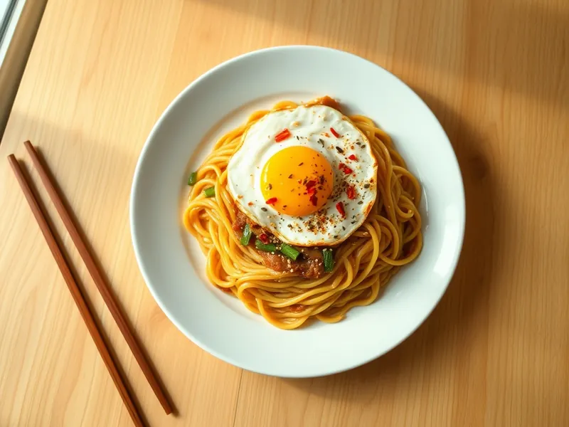

Фото: Иллюстрация ИИ, Cloudflare Workers AI
Лапша с чесноком, соевым соусом и зелёным луком
Яичная лапша с горячим чесночным маслом, соевым соусом и яйцом-глазуньей
15 мин2 порц.648 ккал на порциюБ 23 · Ж 30 · У 75Азиатская кухня
Продукты на 2 порц.
- Яичная лапша200 г
- Яйцо куриное2 шт
- Соевый соус2 ст. л.
- Кунжутное масло2 ч. л.
- Растительное масло2 ст. л.
- Чеснок3 зуб.
- Зелёный лук0,5 пучка
- Сахар1 ч. л.
- Острый перец молотый по желанию1 щеп.
- Кунжут по желанию1 ч. л.
- Вода2000 мл
Как готовить
- Сварите лапшу в кипящей воде по инструкции на упаковке, обычно 3-4 минуты, откиньте и разложите по мискам.
- Смешайте соевый соус, кунжутное масло и сахар. Чеснок и зелёный лук мелко порубите и положите сверху на лапшу вместе с чили.
- Разогрейте 1,5 ложки растительного масла в маленькой сковороде на сильном огне 1 минуту до лёгкого дымка и полейте им чеснок и лук, они зашипят.
- В той же сковороде на среднем огне пожарьте 2 глазуньи 3 минуты, пока белок не схватится.
- Полейте лапшу соусом, перемешайте, положите сверху яйцо и посыпьте кунжутом.
Совет. Масло должно быть по-настоящему горячим: именно оно мгновенно раскрывает аромат чеснока. Не наклоняйтесь над миской в этот момент.